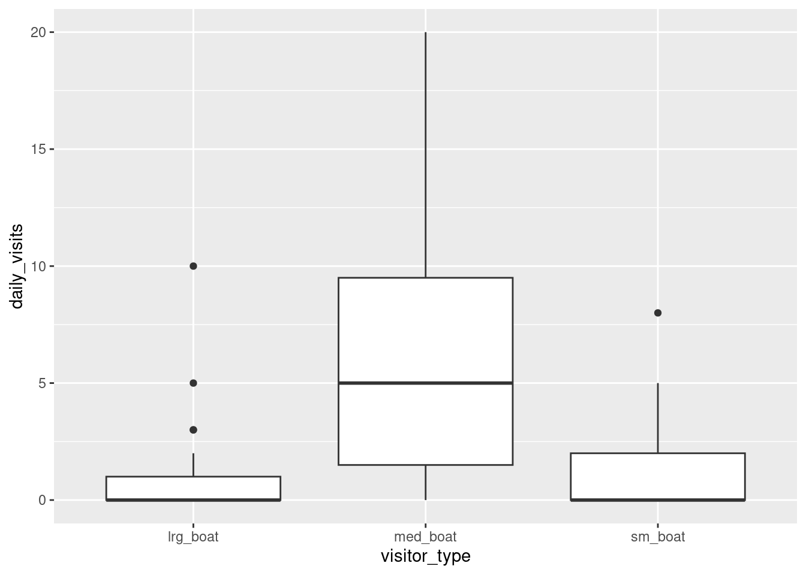
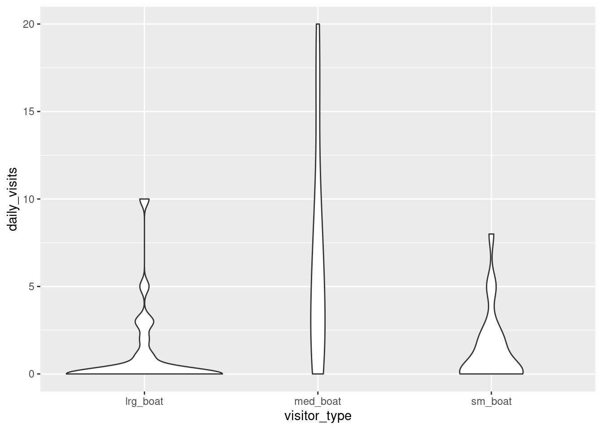
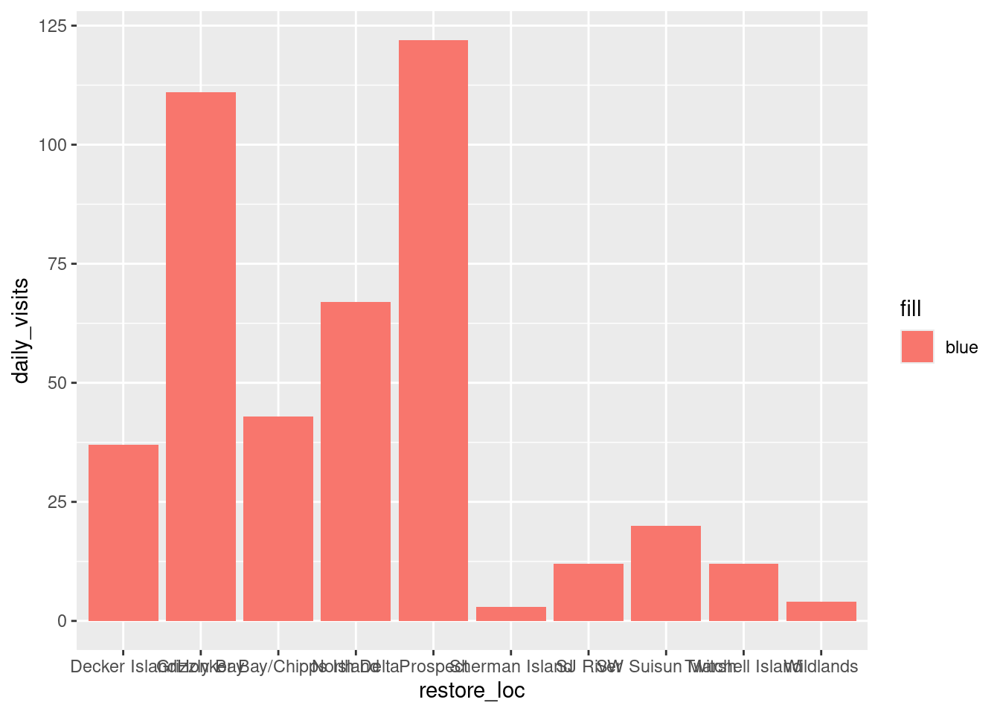
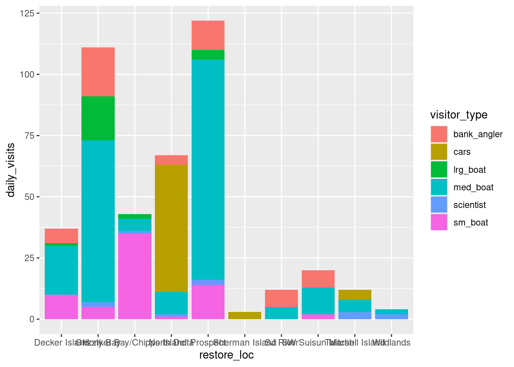
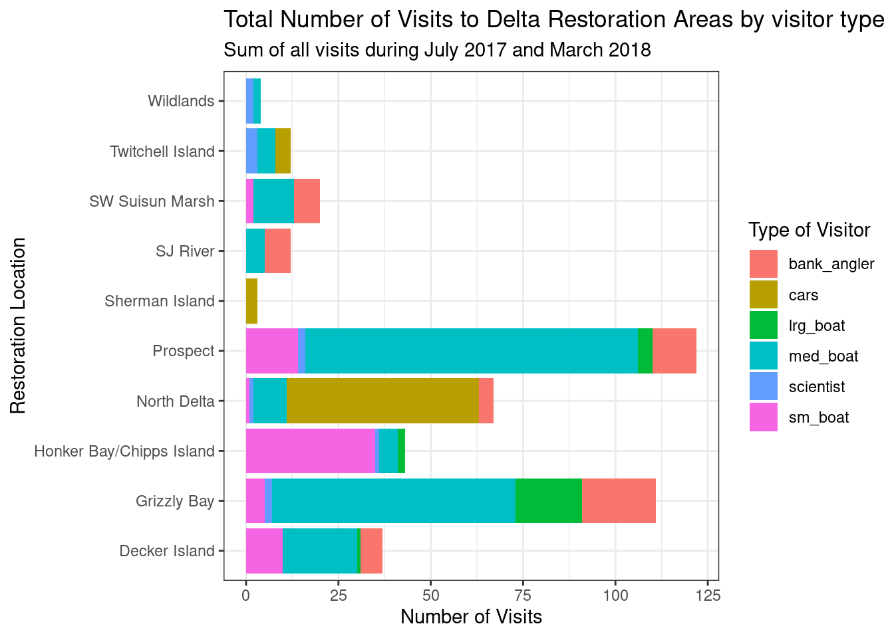
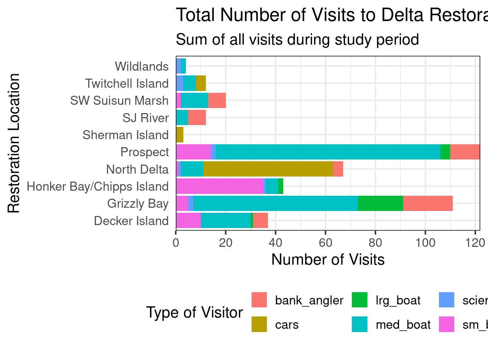
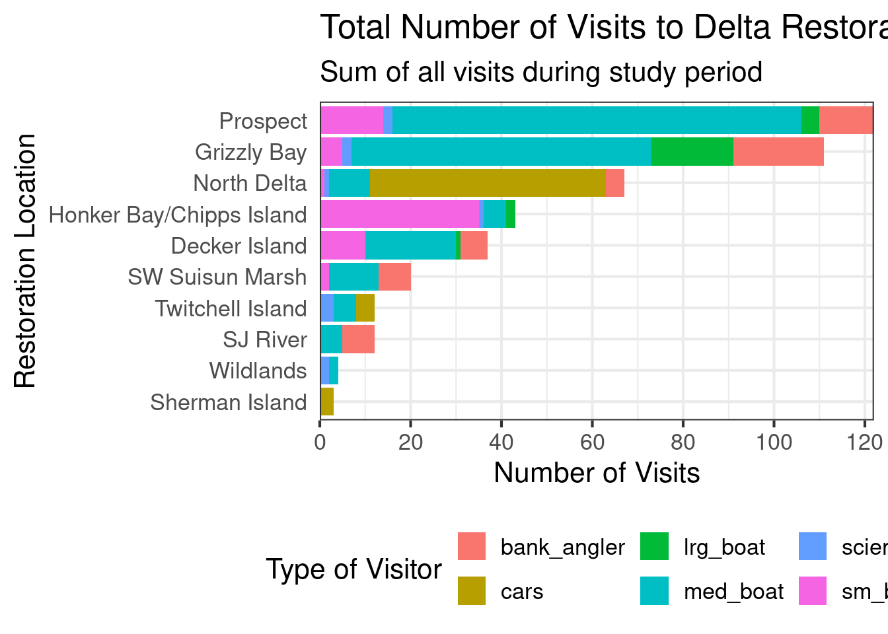
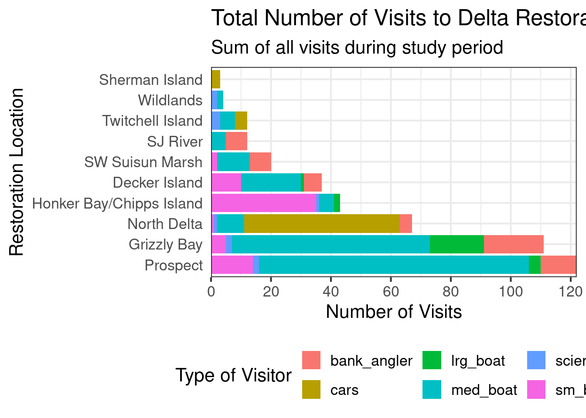
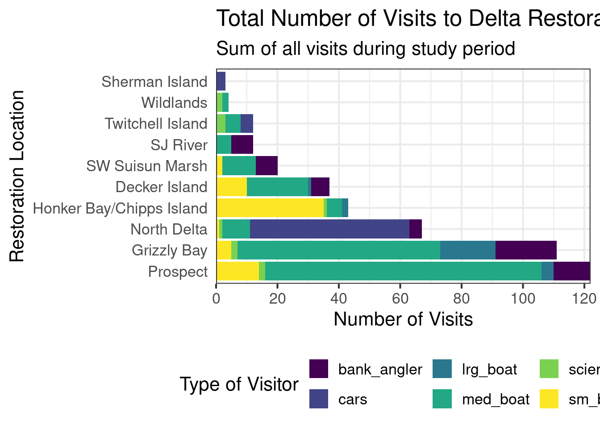
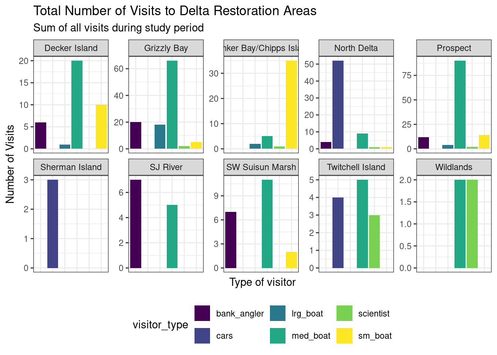

library(readr)
library(dplyr)
library(tidyr)
library(forcats) # makes working with factors easier
library(ggplot2)
library(leaflet) # interactive maps
library(DT) # interactive tables
library(scales) # scale functions for visualization
library(janitor) # expedite cleaning and exploring data
library(viridis) # colorblind friendly color paletteLearning Objectives
- Understand the fundamentals of how the
ggplot2package works - Use
ggplot2’sthemeand other customization functions create publication-grade graphics - Introduce the
leafletandDTpackage to create interactive maps and tables respectively
12.1 Overview
ggplot2 is a popular package for visualizing data in R. From the home page:
ggplot2is a system for declaratively creating graphics, based on The Grammar of Graphics. You provide the data, tellggplot2how to map variables to aesthetics, what graphical primitives to use, and it takes care of the details.
It’s been around for years and has pretty good documentation and tons of example code around the web (like on StackOverflow). The goal of this lesson is to explain the fundamentals of how ggplot2 work, introduce useful functions for customizing your plots and inspire you to go and explore this awesome resource for visualizing your data.
ggplot2 vs base graphics in R vs others
There are many different ways to plot your data in R. All of them work! However, ggplot2 excels at making complicated plots easy and easy plots simple enough
Base R graphics (plot(), hist(), etc) can be helpful for simple, quick and dirty plots. ggplot2 can be used for almost everything else.
Let’s dive into creating and customizing plots with ggplot2.
Setup
Make sure you’re in the right project (
training_{USERNAME}) and use theGitworkflow byPulling to check for any changes. Then, create a new Quarto document, delete the default text, and save this document.Load the packages we’ll need:
- Load the data directly from the EDI Data Repository: Sacramento-San Joaquin Delta Socioecological Monitoring. Navigate to the link above, scroll down and under Resources, hover over the “Download” button for the “Socioecological monitoring data”, right click, and select “Copy Link Address”.
delta_visits_raw <- read_csv("https://portal.edirepository.org/nis/dataviewer?packageid=edi.587.1&entityid=cda8c1384af0089b506d51ad8507641f")Learn about the data. For this session we are going to be working with data on Socioecological Monitoring on the Sacramento-San Joaquin Delta. Check out the documentation.
Finally, let’s explore the data we just read into our working environment.
## Check out column names
colnames(delta_visits_raw)
## Peak at each column and class
glimpse(delta_visits_raw)
## From when to when
range(delta_visits_raw$Date)
## Which time of day?
unique(delta_visits_raw$Time_of_Day)12.2 Getting the data ready
It is more frequent than not, that we need to do some wrangling before we can plot our data the way we want to. After reading and exploring our data, we’ll put our data wrangling skills to practice to get our data in the desired format.
Side note on clean column names
janitor::clean_names() is an awesome function to transform all column names into the same format. The default format for this function is snake_case_format. We highly recommend having clear well formatted column names. It makes your life easier down the line.
How it works?
delta_visits <- delta_visits_raw %>%
janitor::clean_names()And that’s it! If we look to the column names of the object delta_visits we can see all the columns are in a lowercase, snake format.
colnames(delta_visits) [1] "eco_restore_approximate_location" "reach"
[3] "latitude" "longitude"
[5] "date" "time_of_day"
[7] "sm_boat" "med_boat"
[9] "lrg_boat" "bank_angler"
[11] "scientist" "cars"
[13] "notes" With the tidy data principles in mind. Is this data tidy?
- Every column is a variable.
- Every row is an observation.
- Every cell is a single value.
ggplot2 for the most part likes data input to be in a long format (aka “tidy”). So let go ahead and make this data frame long instead of wide. Do you remember the name of the function we can use?
Let’s refresh our memory on how this function works by accessing the help page. Type ?pivot_long() in the console to see the documentation for this function.
visits_long <- delta_visits %>%
pivot_longer(cols = c(sm_boat, med_boat, lrg_boat, bank_angler, scientist, cars),
names_to = "visitor_type",
values_to = "quantity") %>%
rename(restore_loc = eco_restore_approximate_location) %>%
select(-notes)
## Checking the outcome
head(visits_long)# A tibble: 6 × 8
restore_loc reach latitude longitude date time_of_day visitor_type
<chr> <chr> <dbl> <dbl> <date> <chr> <chr>
1 Decker Island Brannan … 38.1 -122. 2017-07-07 unknown sm_boat
2 Decker Island Brannan … 38.1 -122. 2017-07-07 unknown med_boat
3 Decker Island Brannan … 38.1 -122. 2017-07-07 unknown lrg_boat
4 Decker Island Brannan … 38.1 -122. 2017-07-07 unknown bank_angler
5 Decker Island Brannan … 38.1 -122. 2017-07-07 unknown scientist
6 Decker Island Brannan … 38.1 -122. 2017-07-07 unknown cars
# ℹ 1 more variable: quantity <dbl>
Exercise
- Calculate the daily visits by
restore_loc,date, andvisitor_type.
daily_visits_loc <- visits_long %>%
group_by(restore_loc, date, visitor_type) %>%
summarise(daily_visits = sum(quantity))
head(daily_visits_loc)# A tibble: 6 × 4
# Groups: restore_loc, date [1]
restore_loc date visitor_type daily_visits
<chr> <date> <chr> <dbl>
1 Decker Island 2017-07-07 bank_angler 4
2 Decker Island 2017-07-07 cars 0
3 Decker Island 2017-07-07 lrg_boat 0
4 Decker Island 2017-07-07 med_boat 6
5 Decker Island 2017-07-07 scientist 0
6 Decker Island 2017-07-07 sm_boat 0The chunk above uses some of the dplyr functions that we’ve used in the past. We use group_by() to indicate that we want to calculate our results for the unique combinations of type of visit, restoration location proximity, and day. We next use summarise() to calculate an daily visit value for each of these groups. Note we use the %in% operator to pipe in the result of one command as an argument to the next one.
12.3 Plotting with ggplot2
12.3.1 Essentials components
First, we’ll cover some ggplot2 basics to create the foundation of our plot. Then, we’ll add on to make our great customized data visualization.
Now, let’s plot total daily visits by restoration location. We will show this by creating the same plot in 3 slightly different ways. Each of the options below have the 4 essential pieces of a ggplot.
## Option 1 - data and mapping called in the ggplot() function
ggplot(data = daily_visits_loc,
aes(x = restore_loc, y = daily_visits))+
geom_col()
## Option 2 - data called in ggplot function; mapping called in geom
ggplot(data = daily_visits_loc) +
geom_col(aes(x = restore_loc, y = daily_visits))
## Option 3 - data and mapping called in geom
ggplot() +
geom_col(data = daily_visits_loc,
aes(x = restore_loc, y = daily_visits))They all will create the same plot:
(Apologies for the crumble text on the x-axis, we will learn how to make this look better soon)

12.3.2 Looking at different geoms_*
Having the basic structure with the essential components in mind, we can easily change the type of graph by updating the geom_*().
ggplot2 and the pipe operator
Just like in dplyr and tidyr, we can also pipe a data.frame directly into the first argument of the ggplot function using the %>% operator.
This can certainly be convenient, but use it carefully! Combining too many data-tidying or subsetting operations with your ggplot call can make your code more difficult to debug and understand.
We will use the pipe operator to pass into ggplot() a filtered version of daily_visits_loc, and make a plot with different geometries.
Boxplot Note: These examples are to demonstrate case uses of wrangling function prior to plotting. They are not necessarily plotting best practices.
daily_visits_loc %>%
separate(date, c("year", "month", "day"), sep = "-") %>%
filter(daily_visits < 30,
visitor_type %in% c("sm_boat", "med_boat", "lrg_boat")) %>%
ggplot(aes(x = visitor_type, y = daily_visits)) +
geom_boxplot()
Violin plot
daily_visits_loc %>%
separate(date, c("year", "month", "day"), sep = "-") %>%
filter(daily_visits < 30,
visitor_type %in% c("sm_boat", "med_boat", "lrg_boat")) %>%
ggplot(aes(x = visitor_type, y = daily_visits)) +
geom_violin()
Line and point
daily_visits_loc %>%
filter(restore_loc == "Decker Island",
visitor_type == "med_boat") %>%
ggplot(aes(x = date, y = daily_visits)) +
geom_line() +
geom_point()
12.3.3 Customizing our plot
Let’s go back to our base bar graph. What if we want our bars to be blue instead of gray? You might think we could run this:
ggplot(data = daily_visits_loc,
aes(x = restore_loc, y = daily_visits,
fill = "blue"))+
geom_col()
Why did that happen?
Notice that we tried to set the fill color of the plot inside the mapping aesthetic call. What we have done, behind the scenes, is create a column filled with the word “blue” in our data frame, and then mapped it to the fill aesthetic, which then chose the default fill color, salmon.
What we really wanted to do was just change the color of the bars. If we want do do that, we can call the color option in the geom_col() function, outside of the mapping aesthetics function call.
ggplot(data = daily_visits_loc,
aes(x = restore_loc, y = daily_visits))+
geom_col(fill = "blue")
What if we did want to map the color of the bars to a variable, such as visitor_type. ggplot() is really powerful because we can easily get this plot to visualize more aspects of our data.
ggplot(data = daily_visits_loc,
aes(x = restore_loc, y = daily_visits,
fill = visitor_type))+
geom_col()
12.3.3.1 Setting ggplot themes
We have successfully plotted our data. But, this is clearly not a nice plot. Let’s work on making this plot look a bit nicer. We are going to:
- Add a title, subtitle and adjust labels using
labs() - Flip the x and y axis to better read the graph using
coord_flip() - Include a built in theme using
theme_bw()
ggplot(data = daily_visits_loc,
aes(x = restore_loc, y = daily_visits,
fill = visitor_type))+
geom_col()+
labs(x = "Restoration Location",
y = "Number of Visits",
fill = "Type of Visitor",
title = "Total Number of Visits to Delta Restoration Areas by visitor type",
subtitle = "Sum of all visits during July 2017 and March 2018")+
coord_flip()+
theme_bw()
You can see that the theme_bw() function changed a lot of the aspects of our plot! The background is white, the grid is a different color, etc. There are lots of other built in themes like this that come with the ggplot2 package that help quickly set the look of the plot. Use the RStudio auto-complete theme_ <TAB> to view a list of theme functions.
## Useful baseline themes are
theme_minimal()
theme_light()
theme_classic()The built in theme functions (theme_*()) change the default settings for many elements that can also be changed individually using thetheme() function. The theme() function is a way to further fine-tune the look of your plot. This function takes MANY arguments (just have a look at ?theme). Luckily there are many great ggplot resources online so we don’t have to remember all of these, just Google “ggplot cheat sheet” and find one you like.
Let’s look at an example of a theme() call, where we change the position of the legend from the right side to the bottom, and remove the ticks of our Locations axis.
ggplot(data = daily_visits_loc,
aes(x = restore_loc, y = daily_visits,
fill = visitor_type))+
geom_col()+
labs(x = "Restoration Location",
y = "Number of Visits",
fill = "Type of Visitor",
title = "Total Number of Visits to Delta Restoration Areas by visitor type",
subtitle = "Sum of all visits during study period")+
coord_flip()+
theme_bw()+
theme(legend.position = "bottom",
axis.ticks.y = element_blank()) ## note we mention y-axis here
Note that the theme() call needs to come after any built-in themes like theme_bw() are used. Otherwise, theme_bw() will likely override any theme elements that you changed using theme().
You can also save the result of a series of theme() function calls to an object to use on multiple plots. This prevents needing to copy paste the same lines over and over again!
my_theme <- theme_bw(base_size = 16) +
theme(legend.position = "bottom",
axis.ticks.y = element_blank())So now our code will look like this:
ggplot(data = daily_visits_loc,
aes(x = restore_loc, y = daily_visits,
fill = visitor_type))+
geom_col()+
labs(x = "Restoration Location",
y = "Number of Visits",
fill = "Type of Visitor",
title = "Total Number of Visits to Delta Restoration Areas by visitor type",
subtitle = "Sum of all visits during study period")+
coord_flip()+
my_theme
Exercise
What changes do you expect to see in your plot by adding the following line of code? Discuss with your neighbor and then try it out!
scale_y_continuous(breaks = seq(0,120, 20))
Answer
ggplot(data = daily_visits_loc,
aes(x = restore_loc, y = daily_visits,
fill = visitor_type))+
geom_col()+
labs(x = "Restoration Location",
y = "Number of Visits",
fill = "Type of Visitor",
title = "Total Number of Visits to Delta Restoration Areas by visitor type",
subtitle = "Sum of all visits during study period")+
coord_flip()+
scale_y_continuous(breaks = seq(0,120, 20))+
my_theme
Finally we are going to expand the bars all the way to the axis line. In other words, remove the gap between the bars and the vertical “x-axis” line.
ggplot(data = daily_visits_loc,
aes(x = restore_loc, y = daily_visits,
fill = visitor_type))+
geom_col()+
labs(x = "Restoration Location",
y = "Number of Visits",
fill = "Type of Visitor",
title = "Total Number of Visits to Delta Restoration Areas by visitor type",
subtitle = "Sum of all visits during study period")+
coord_flip()+
scale_y_continuous(breaks = seq(0,120, 20), expand = c(0,0))+
my_theme
12.3.3.2 Reordering things
ggplot() loves putting things in alphabetical order. But more frequent than not, that’s not the order you actually want things to be plotted. One way to do this is to use the fct_reorder() function from the forcats package. forcats provides tools for working with categorical variables. In this case, we want to reorder our categorical variable of restore_loc based on the total number of visits.
The first thing we need to do is to add a column to our data with the total number of visits by location. This will be our “sorting” variable.
daily_visits_totals <- daily_visits_loc %>%
group_by(restore_loc) %>%
mutate(n = sum(daily_visits)) %>%
ungroup()
head(daily_visits_totals)# A tibble: 6 × 5
restore_loc date visitor_type daily_visits n
<chr> <date> <chr> <dbl> <dbl>
1 Decker Island 2017-07-07 bank_angler 4 37
2 Decker Island 2017-07-07 cars 0 37
3 Decker Island 2017-07-07 lrg_boat 0 37
4 Decker Island 2017-07-07 med_boat 6 37
5 Decker Island 2017-07-07 scientist 0 37
6 Decker Island 2017-07-07 sm_boat 0 37Next, we will run the code for our plot adding the fct_reorder() function.
ggplot(data = daily_visits_totals,
aes(x = fct_reorder(restore_loc, n), y = daily_visits,
fill = visitor_type))+
geom_col()+
labs(x = "Restoration Location",
y = "Number of Visits",
fill = "Type of Visitor",
title = "Total Number of Visits to Delta Restoration Areas by visitor type",
subtitle = "Sum of all visits during study period")+
coord_flip()+
scale_y_continuous(breaks = seq(0,120, 20), expand = c(0,0))+
my_theme
What if you want to plot the other way around? In this case from least to greater? We add the desc() to the variable we are sorting by.
ggplot(data = daily_visits_totals,
aes(x = fct_reorder(restore_loc, desc(n)), y = daily_visits,
fill = visitor_type))+
geom_col()+
labs(x = "Restoration Location",
y = "Number of Visits",
fill = "Type of Visitor",
title = "Total Number of Visits to Delta Restoration Areas by visitor type",
subtitle = "Sum of all visits during study period")+
coord_flip()+
scale_y_continuous(breaks = seq(0,120, 20), expand = c(0,0))+
my_theme
12.3.3.3 Colors
The last thing we will do to our plot is change the color. To do this we are going to use a function from the viridis package. This package provides different color palettes that are designed to improve graph readability for readers with common forms of color blindness and/or color vision deficiency. With viridis, there are multiple other color palette packages or color palettes out there that you can use to customize your graphs. We could spend a whole session talking about colors in R! For the purpose of this lesson we are just going to keep it brief and show one function of the viridis package that will make our plot colors look better.
ggplot(data = daily_visits_totals,
aes(x = fct_reorder(restore_loc, desc(n)), y = daily_visits,
fill = visitor_type))+
geom_col()+
scale_fill_viridis_d()+
labs(x = "Restoration Location",
y = "Number of Visits",
fill = "Type of Visitor",
title = "Total Number of Visits to Delta Restoration Areas by visitor type",
subtitle = "Sum of all visits during study period")+
coord_flip()+
scale_y_continuous(breaks = seq(0,120, 20), expand = c(0,0))+
my_theme
Things to keep in mind when choosing a color palette are the number of variables you have and how many colors your palette has. And if you need a discrete or a continuous color palette. Find more information about colors in this R color cheatsheet.
12.3.3.4 Saving plots
Saving plots using ggplot is easy! The ggsave() function will save either the last plot you created, or any plot that you have saved to an object. You can specify what output format you want, size, resolution, etc. See ?ggsave() for documentation.
For example, if we want to save our current plot to an existing folder named “figures”, we can do this:
ggsave("figures/visit_restore_site_delta.jpg", width = 12, height = 6, units = "in")12.3.3.5 Creating multiple plots
An easy way to plot another aspect of your data is using the function facet_wrap(). This function takes a mapping to a variable using the syntax ~{variable_name}. The ~ (tilde) is a model operator which tells facet_wrap() to model each unique value within variable_name to a facet in the plot.
The default behavior of facet wrap is to put all facets on the same x and y scale. You can use the scales argument to specify whether to allow different scales between facet plots (e.g scales = "free_y" to free the y axis scale). You can also specify the number of columns using the ncol = argument or number of rows using nrow =.
facet_plot <- ggplot(data = daily_visits_totals,
aes(x = visitor_type, y = daily_visits,
fill = visitor_type))+
geom_col()+
facet_wrap(~restore_loc,
scales = "free_y",
ncol = 5,
nrow = 2)+
scale_fill_viridis_d()+
labs(x = "Type of visitor",
y = "Number of Visits",
title = "Total Number of Visits to Delta Restoration Areas",
subtitle = "Sum of all visits during study period")+
theme_bw()+
theme(legend.position = "bottom",
axis.ticks.x = element_blank(),
axis.text.x = element_blank())
facet_plot
We can save this plot to our figures folder too. Note that this time we are specifically mentioning the object we want to save.
ggsave("figures/visit_restore_site_facet.jpg", facet_plot, width = 12, height = 8, units = "in")12.4 Interactive visualization
12.4.1 Tables with DT
Now that we know how to make great static visualizations, let’s introduce two other packages that allow us to display our data in interactive ways. These packages really shine when used with GitHub Pages, so at the end of this lesson we will publish our figures to the website we created earlier.
First let’s show an interactive table of unique sampling locations using DT. We will start by creating a data.frame containing unique sampling locations.
locations <- visits_long %>%
distinct(restore_loc, .keep_all = T) %>%
select(restore_loc, latitude, longitude)
head(locations)# A tibble: 6 × 3
restore_loc latitude longitude
<chr> <dbl> <dbl>
1 Decker Island 38.1 -122.
2 SW Suisun Marsh 38.2 -122.
3 Grizzly Bay 38.1 -122.
4 Prospect 38.2 -122.
5 SJ River 38.1 -122.
6 Wildlands 38.3 -122.The dplyr::distinct() function comes pretty handy when you want to filter unique values in a column. In this case we use the .keep_all = T argument to keep all the columns of our data frame so we can have the latitude and longitude of each of the locations. If we don’t add this argument, we would end up with a data frame with only one column: restore_loc and 10 rows, one for each of the unique locations.
Now we can display this table as an interactive table using datatable() from the DT package.
datatable(locations)12.4.2 Maps with leaflet
The leaflet() package allows you to make basic interactive maps using just a couple lines of code. Note that unlike ggplot2, the leaflet package uses pipe operators (%>%) and not the additive operator (+).
The addTiles() function without arguments will add base tiles to your map from OpenStreetMap. addMarkers() will add a marker at each location specified by the latitude and longitude arguments. Note that the ~ symbol is used here to model the coordinates to the map (similar to facet_wrap() in ggplot).
leaflet(locations) %>%
addTiles() %>%
addMarkers(
lng = ~ longitude,
lat = ~ latitude,
popup = ~ restore_loc
)You can also use leaflet to import Web Map Service (WMS) tiles. For example, we can use any of the base maps provided by USGS in the National Map archive. For example, let’s use the USGSTopo base map. In this example, we also demonstrate how to create a more simple circle marker, the look of which is explicitly set using a series of style-related arguments.
leaflet(locations) %>%
addWMSTiles(
"https://basemap.nationalmap.gov/arcgis/services/USGSTopo/MapServer/WmsServer",
layers = "0",
options = WMSTileOptions(format = "image/png", transparent = TRUE)) %>%
addCircleMarkers(
lng = ~ longitude,
lat = ~ latitude,
popup = ~ restore_loc,
radius = 5,
# set fill properties
fillColor = "salmon",
fillOpacity = 1,
# set stroke properties
stroke = T,
weight = 0.5,
color = "white",
opacity = 1)We can also layer base maps. In this case the USGSImageryTopo base map with the USGSHydroCached base map. Note that the url where the map is retrieved is very similar for each USGS base map.
leaflet(locations) %>%
addWMSTiles(
"https://basemap.nationalmap.gov/arcgis/services/USGSImageryTopo/MapServer/WmsServer",
layers = "0",
options = WMSTileOptions(format = "image/png", transparent = TRUE)) %>%
addWMSTiles(
"https://basemap.nationalmap.gov/arcgis/services/USGSHydroCached/MapServer/WmsServer",
layers = "0",
options = WMSTileOptions(format = "image/png", transparent = TRUE)) %>%
addCircleMarkers(
lng = ~ longitude,
lat = ~ latitude,
popup = ~ restore_loc,
radius = 5,
# set fill properties
fillColor = "salmon",
fillOpacity = 1,
# set stroke properties
stroke = T,
weight = 0.5,
color = "white",
opacity = 1)Leaflet has a ton of functionality that can enable you to create some beautiful, functional maps with relative ease. Here is an example of some we created as part of the State of Alaskan Salmon and People (SASAP) project, created using the same tools we showed you here. This map hopefully gives you an idea of how powerful the combination of Quarto or RMarkdown and GitHub Pages can be.
12.5 Publish the Data Visualization lesson to your webpage
Steps
- Save the
qmdyou have been working on for this lesson. - “Render” the
qmd. This is a good way to test if everything in your code is working. - Go to your
index.qmdand the link to thehtmlfile with this lesson’s content. - Save and render
index.qmdto anhtml. - Use the
Gitworkflow:Stage > Commit > Pull > Push
12.6 ggplot2 Resources
- Why not to use two axes, and what to use instead: The case against dual axis charts by Lisa Charlotte Rost.
- Customized Data Visualization in
ggplot2by Allison Horst. - A
ggplot2tutorial for beautiful plotting in R by Cedric Scherer.